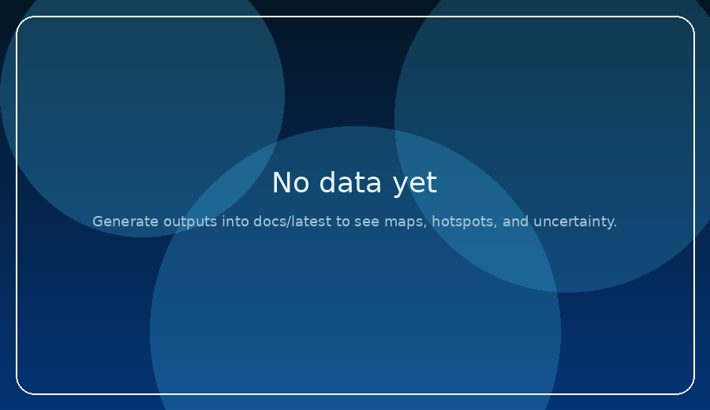

Habitat × Operations → Catch Probability 🐟🌊
Two scientific maps—Habitat Suitability (Phabitat) and Operational Feasibility (Pops)—combine into a single catchability score: Pcatch = Phabitat × Pops. Includes uncertainty (ensemble agreement/spread), explainable top‑10 hotspots, and offline install.
Dynamic Map
Species Mode
Timeline + Aggregation
Audit meta.json
Latest preview
Loading…

What’s inside ✅
- Habitat vs Ops separation with default Pcatch
- Uncertainty: Agreement + Spread/Std
- Species profiles: Skipjack & Yellowfin (editable priors)
- Time range: past up to 7 days + forecast 3–4 days (pipeline dependent)
- Aggregation: Mean / Median / Max / P90 (default)
- Feedback saved locally (IndexedDB) with validation + rate limit
Credits
Askani Fishing Data company
Designed by: عباس آسکانی — Abbas Askani
PWA + backend pipeline scaffold. Production hooks: AIS effort, MaxEnt/PPP, GeoTIFF/COG.